Sección 2 Regresión múltiple
2.1 ¿Por qué estadística multivariada?
El proceso de modelado consiste en construir expresiones matemáticas que permitan representar el comportamiento de una variable que queremos estudiar. Cuando contamos con varias variables, suele interesarnos analizar cómo unas influyen sobre otras, determinando si existe una relación, su intensidad y su forma. En muchos casos, estas relaciones pueden ser complejas y difíciles de describir directamente; por ello, se busca aproximarlas mediante funciones matemáticas sencillas como polinomios, que conserven los elementos esenciales para explicar el fenómeno de interés.
Cuando estudiamos fenómenos deterministas, es común vincular una variable dependiente con una o más variables independientes. Por ejemplo, en la ecuación de la velocidad (\(v=d/t\)), la distancia depende de la velocidad y del tiempo. En la práctica, cuando realizamos distintos experimentos, las fórmulas deterministas podrían no capturar por completo el comportamiento observado. Esto puede deberse a factores no controlados, a la presencia de variabilidad natural o a efectos aleatorios. Por esta razón, además de la parte determinista del modelo, se incorpora un término que represente la discrepancia aleatoria entre lo que se predice y lo que efectivamente se observa. De forma general, esta idea se resume como:
\[Observación = Modelo \ + \ Error\]
Cuando se supone que la relación entre las variables puede representarse mediante una ecuación lineal, hablamos de análisis de regresión lineal. Si intervienen únicamente dos variables, una dependiente \(y\) y independiente \(x\), se trata de regresión lineal simple. En cambio, cuando la variable de interés \(y\) depende de dos o más variables independientes \(x_1,x_2, ...\) hablamos de regresión lineal múltiple.
Supongamos que queremos predecir el rendimiento académico de un estudiante, ¿solo necesitamos las horas que estudia?
En este caso se tiene que el puntaje o rendimiento lo podemos representar con \(y\) y las horas de estudio con \(x\). Entonces esta propuesta de modelo, la podríamos representar como:
\[y=\beta_0+\beta_1x\] Donde \(\beta_0\) es la ordenada al origen y \(\beta_1\) la pendiente. Esta recta podría no ajustarse al modelo por diferentes razones, entonces lo que se hace es considerar un error aleatorio \(\epsilon\). El modelo que ya considera este error se representa como:
\[y=\beta_0+\beta_1x+\epsilon.\]
A este modelo se le conoce como modelo de regresión lineal simple y a \(\beta_0,\beta_1\) se les conoce como coeficientes de regresión.
En problemas reales, casi nunca una sola variable explica el fenómeno. Las decisiones y predicciones mejoran cuando integramos múltiples fuentes de información.
Ejemplos: - Salud: riesgo de una enfermedad según edad, IMC, actividad física, dieta y antecedentes. - Ingeniería: vida útil de una pieza según temperatura, vibración, material y carga. - Biología: crecimiento de una planta por agua, luz, fertilizante, temperatura.
Ejemplo: Si queremos predecir el rendimiento académico de un estudiante, ¿solo necesitamos las horas que estudia? ¿qué otras variables podrían influir en el puntaje de un examen?
Rendimiento escolar
set.seed(123)
n <- 10
data_intro <- tibble(
estudiante = paste0("E", 1:n),
horas_estudio = c(2,3,4,5,1,3,2,4,5,6),
horas_sueno = c(7,8,6,7,5,8,7,6,9,7),
asistencia = c(0.9,0.95,0.8,0.85,0.7,0.9,0.8,0.9,1,0.95),
puntaje = c(65,70,68,80,60,75,65,78,88,85)
)
data_intro## # A tibble: 10 × 5
## estudiante horas_estudio horas_sueno asistencia puntaje
## <chr> <dbl> <dbl> <dbl> <dbl>
## 1 E1 2 7 0.9 65
## 2 E2 3 8 0.95 70
## 3 E3 4 6 0.8 68
## 4 E4 5 7 0.85 80
## 5 E5 1 5 0.7 60
## 6 E6 3 8 0.9 75
## 7 E7 2 7 0.8 65
## 8 E8 4 6 0.9 78
## 9 E9 5 9 1 88
## 10 E10 6 7 0.95 85¿Qué pasa si solo graficamos horas de estudio vs puntaje?
Plot hotas de estudio vs puntaje sugerida
library(ggplot2)
ggplot(data_intro, aes(horas_estudio, puntaje)) +
geom_point(size=3) +
geom_smooth(method="lm", se=FALSE) +
labs(title="¿Solo horas de estudio explican el puntaje?")## `geom_smooth()` using formula = 'y ~ x'
¿Se ajusta un modelo lineal? ¿Porqué?
2.1.1 ¿Qué es “multivariado” y por qué lo necesitamos?
Idea central: cuando varias \(x\) influyen sobre \(y\), estudiar cada \(x\) por separado puede engañarnos. El análisis multivariado permite:
- Aislar efectos: estimar el efecto de \(x_1\) manteniendo constantes \(x_2,x_3,...\).
- Mejorar predicción: reducir error al añadir información relevante.
- Controlar confusores: variables que cambian la relación aparente entre \(y\) y \(x\).
Ejemplo: Si ajustamos ahora un modelo con varias variables, ¿vamos a observar un cambio? ¿se ajustará mejor?
Código (modelos + comparaciones)
# Modelo simple
m1 <- lm(puntaje ~ horas_estudio, data = data_intro)
# Modelo múltiple
m2 <- lm(puntaje ~ horas_estudio + horas_sueno + asistencia, data = data_intro)
# Medidas clave
R2_m1 <- glance(m1)$r.squared
R2_m2 <- glance(m2)$r.squared
print(paste("El R2 del modelo simple:", R2_m1))## [1] "El R2 del modelo simple: 0.824317362184441"## [1] "El R2 del modelo multiple: 0.895428180549875"- ¿Aumentó \(R^2\) al incluir más variables? ¿Por qué tiende a subir?
- ¿Qué cambia en la interpretación de horas_estudio al controlar por horas_sueno y asistencia?
- ¿Puede un predictor ser importante en bivariado y no en multivariado (o viceversa)?
2.2 Regresión múltiple
2.2.1 Modelo y estimación
Los modelos en regresión lineal múltiple están dados por la siguiente forma, donde \(y\) depende de \(p\) variables predictoras:
\[y_i=\beta_0+\beta_1x_{i1}+\beta_2x_{i2} + \beta_px_{ip}+\epsilon_i.\]
Se suele asumir que los errores \(\epsilon_i\) son i.i.d. con distribución normal de media 0 y varianza \(\sigma^2\) desconocida. Los coeficientes \(\beta_i\) son constantes desconocidas y son los parámetros del modelo. Cada \(\beta_j\) representa el cambio esperado en la respuesta \(y\) por el cambio unitario en \(x_i\) cuando todas las demás variables independientes \(x_i(i\neq j)\) se mantienen constantes.
Los coeficientes los podemos interpretar como sigue:
- Intercepto (\(\beta_0\)): valor esperado de \(y\) cuando todas las \(x\)=0.
- Pendiente \(\beta_j\): efecto parcial de \(x_j\) sobre \(y\) manteniendo las demás constantes.
En los modelos de regreción lineal, solemos usar las siguientes medidas de bondad de ajuste:
- \(R^2\): proporción de varianza de \(y\) explicada.
- \(R^2\) ajustado: penaliza por número de predictores (mejor para comparar modelos con distinto número de x).
- RMSE (\(\sigma\)): error típico de predicción en unidades de \(y\).
comp <- dplyr::bind_rows(
glance(m1) %>% mutate(modelo="simple"),
glance(m2) %>% mutate(modelo="multiple")
) %>% select(modelo, r.squared, adj.r.squared)
comp## # A tibble: 2 × 3
## modelo r.squared adj.r.squared
## <chr> <dbl> <dbl>
## 1 simple 0.824 0.802
## 2 multiple 0.895 0.843Para este modelo algunos de los supuestos se siguen del modelo de regresión lineal simple y se agregan algunos que tienen que ver con la relación que pudiera existir entre las variables regresoras.
- El modelo es lineal en los parámetros.
Chequeo: residuales vs ajustados sin patrón claro. - El modelo está especificado correctamente.
- Covarianza cero entre variables regresoras y el error.
- Esperanza del error igual a cero.
- Homocedasticidad.
- No autocorrelación entre los errores.
- Los errores siguen una distribución normal.
- Mas observaciones que parámetros a estimar.
- Variación entre los valores de las variables regresoras.
- No colinealidad (multicolinealidad) entre las variables regresoras, es decir, no existe una relación lineal entre \(x_i\) y \(x_j\) (es decir, las variables son linealmente independientes).
Supuestos
# Modelo m2
par(mfrow=c(1,2))
plot(m2, which=1) # Residuales vs ajustados
plot(m2, which=2) # QQ-plot
Ejercicio: Supongamos que tenemos los siguientes datos: precio de vivienda según metros, habitaciones y distancia al centro.
Dataset
set.seed(42)
n <- 14
casas <- tibble::tibble(
precio = c(200,220,250,275,300,180,210,260,280,320,190,240,230,305),
metros = c(80,90,100,110,120,70,85,105,115,130,75,95,92,125),
habitaciones = c(2,3,3,4,4,2,3,3,4,5,2,3,3,4),
distancia_centro = c(5,4,6,3,2,8,6,3,2,1,7,5,4,2)
)
casas## # A tibble: 14 × 4
## precio metros habitaciones distancia_centro
## <dbl> <dbl> <dbl> <dbl>
## 1 200 80 2 5
## 2 220 90 3 4
## 3 250 100 3 6
## 4 275 110 4 3
## 5 300 120 4 2
## 6 180 70 2 8
## 7 210 85 3 6
## 8 260 105 3 3
## 9 280 115 4 2
## 10 320 130 5 1
## 11 190 75 2 7
## 12 240 95 3 5
## 13 230 92 3 4
## 14 305 125 4 2- Ajusta
precio ~ metros(simple) yprecio ~ metros + habitaciones + distancia_centro(múltiple).
- Compara \(R^2\), \(R^2\) ajustado y σ (RMSE).
- Interpreta el coeficiente de
distancia_centro.
- Revisa QQ-plot y residuales vs ajustados. ¿Algún patrón?
Solución
m_s <- lm(precio ~ metros, data=casas)
m_m <- lm(precio ~ metros + habitaciones + distancia_centro, data=casas)
broom::glance(m_s)[,c("r.squared","adj.r.squared")]## # A tibble: 1 × 2
## r.squared adj.r.squared
## <dbl> <dbl>
## 1 0.996 0.996## # A tibble: 1 × 2
## r.squared adj.r.squared
## <dbl> <dbl>
## 1 0.997 0.996## # A tibble: 4 × 5
## term estimate std.error statistic p.value
## <chr> <dbl> <dbl> <dbl> <dbl>
## 1 (Intercept) -8.67 14.9 -0.583 0.573
## 2 metros 2.53 0.162 15.6 0.0000000236
## 3 habitaciones -0.505 2.80 -0.180 0.861
## 4 distancia_centro 1.38 0.974 1.42 0.187
2.3 Estimación de parámetros
Ejemplo (Montgomery, 2002): : Un embotellador de bebidas gaseosas analiza las rutas de servicio de las máquinas expendedoras en su sistema de distribución. Le interesa predecir el tiempo necesario para que el representante de ruta atienda las máquinas expendedoras en una tienda.
Esta actividad de servicio consiste en abastecer la máquina con productos embotellados, y algo de mantenimiento o limpieza. El ingeniero industrial responsable del estudio ha sugerido que las dos variables más importantes que afectan el tiempo de entrega \(y\) son la cantidad de cajas de producto abastecido, \(x_1\), y la distancia caminada por el representante, \(x_2\).
El ingeniero ha reunido 25 observaciones de tiempo de entrega que se ven en la tabla siguiente. Se ajustará el modelo de regresión lineal multiple siguiente:
\[ y = \beta_0 + \beta_1 x_1 + \beta_2 x_2 + \varepsilon \]
Archivo: refrescos.csv.
Base de datos
#
datos <- data.frame(
Observacion = 1:25,
y = c(16.68, 11.50, 12.03, 14.88, 13.75,
18.11, 8.00, 17.83, 79.24, 21.50,
40.33, 21.00, 13.50, 19.75, 24.00,
29.00, 15.35, 19.00, 9.50, 35.10,
17.90, 52.32, 18.75, 19.83, 10.75),
x1 = c(7, 3, 3, 4, 6,
7, 2, 7, 30, 5,
16, 10, 4, 6, 9,
10, 6, 7, 3, 17,
10, 26, 9, 8, 4),
x2 = c(560, 220, 340, 80, 150,
330, 110, 210, 1460, 605,
688, 215, 255, 462, 448,
776, 200, 132, 36, 770,
140, 810, 450, 635, 150)
)
datos## Observacion y x1 x2
## 1 1 16.68 7 560
## 2 2 11.50 3 220
## 3 3 12.03 3 340
## 4 4 14.88 4 80
## 5 5 13.75 6 150
## 6 6 18.11 7 330
## 7 7 8.00 2 110
## 8 8 17.83 7 210
## 9 9 79.24 30 1460
## 10 10 21.50 5 605
## 11 11 40.33 16 688
## 12 12 21.00 10 215
## 13 13 13.50 4 255
## 14 14 19.75 6 462
## 15 15 24.00 9 448
## 16 16 29.00 10 776
## 17 17 15.35 6 200
## 18 18 19.00 7 132
## 19 19 9.50 3 36
## 20 20 35.10 17 770
## 21 21 17.90 10 140
## 22 22 52.32 26 810
## 23 23 18.75 9 450
## 24 24 19.83 8 635
## 25 25 10.75 4 150Veamos un gráfico de dispersión de los datos. ¿Qué observamos?
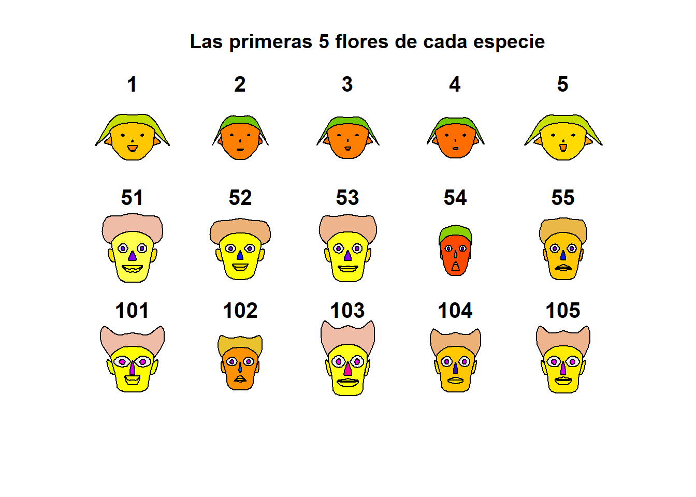
- Estimar \(\beta\)
Primero, vamos a crear la matriz \(X\) y el vector \(y\).
Matrices
Ya sabemos que nuestro estimador está dado por
\[ \hat{\beta} = (X'X)^{-1}X'y \]
Entonces podemos encontrar el estimador.
Estimador beta
## [,1]
## [1,] 2.34123115
## [2,] 1.61590721
## [3,] 0.01438483Entonces el ajuste por el método de mínimos cuadrados, con los coeficientes de regresión que encontramos está dado por:
\(\hat{y} =\) 2.3412311 \(+\) 1.6159072 \(x_1\) \(+\) 1.6159072 \(x_2\)
Esto lo podemos hacer más rápido usando la función de lm. Construimos el modelo.
Modelo en R
##
## Call:
## lm(formula = y ~ x1 + x2, data = datos)
##
## Coefficients:
## (Intercept) x1 x2
## 2.34123 1.61591 0.01438¿Cómo accedemos a los valores del modelo?
Los valores son \(\beta_0=\) 2.3412311, \(\beta_1=\) 1.6159072 y \(\beta_2=\) 0.0143848.
- Estimación de la varianza del error \(\sigma^2\)
Ya tenemos que la suma de los cuadrados de los errores está dada por
\[ SSE = y'y - \hat{\beta}X'y\]
Sustituimos los valores que tenemos y obtemos el SSE.
Y de está forma, podemos encontrar el estimador de \(\sigma^2\).
Directo con las funciones de R, podemos acceder a los parámetros que se guardaron en el modelo que ya calculamos.
Resumen del modelo
##
## Call:
## lm(formula = y ~ x1 + x2, data = datos)
##
## Residuals:
## Min 1Q Median 3Q Max
## -5.7880 -0.6629 0.4364 1.1566 7.4197
##
## Coefficients:
## Estimate Std. Error t value Pr(>|t|)
## (Intercept) 2.341231 1.096730 2.135 0.044170 *
## x1 1.615907 0.170735 9.464 3.25e-09 ***
## x2 0.014385 0.003613 3.981 0.000631 ***
## ---
## Signif. codes: 0 '***' 0.001 '**' 0.01 '*' 0.05 '.' 0.1 ' ' 1
##
## Residual standard error: 3.259 on 22 degrees of freedom
## Multiple R-squared: 0.9596, Adjusted R-squared: 0.9559
## F-statistic: 261.2 on 2 and 22 DF, p-value: 4.687e-16Algunos de los parámetros almacenados en el modelo nos permiten obtener también el resultado previo.
2.3.1 Ejercicios
Ejercicio 1: Un analista hace un estudio químico y espera que el rendimiento de cierta sustancia se vea afectado por dos factores. Se realizan 17 experimentos cuyos datos se registran en el cuadro siguiente. Por experimentos similares, se sabe que los factores \(x_1\) y \(x_2\) no están relacionados; por ello, el analista decide utilizar un modelo de regresión lineal múltiple. Calcule el modelo de regresión y grafíquelo sobre las observaciones.
Archivo: est_quimico.csv
Datos Ejercicio 1
datos2 <- data.frame(
Experimento = 1:17,
x1 = c(41.9, 43.4, 43.9, 44.5, 47.3, 47.5, 47.9, 50.2, 52.8, 53.2, 56.7, 57.0, 63.5, 64.3, 71.1, 77.0, 77.8),
x2 = c(29.1, 29.3, 29.5, 29.7, 29.9, 30.3, 30.5, 30.7, 30.8, 30.9, 31.5, 31.7, 31.9, 32.0, 32.1, 32.5, 32.9),
y = c(251.3, 251.3, 248.3, 267.5, 273.0, 276.5, 270.3, 274.9, 285.0, 290.0, 297.0, 302.5, 304.5, 309.3, 321.7, 330.7, 349.0)
)
datos2## Experimento x1 x2 y
## 1 1 41.9 29.1 251.3
## 2 2 43.4 29.3 251.3
## 3 3 43.9 29.5 248.3
## 4 4 44.5 29.7 267.5
## 5 5 47.3 29.9 273.0
## 6 6 47.5 30.3 276.5
## 7 7 47.9 30.5 270.3
## 8 8 50.2 30.7 274.9
## 9 9 52.8 30.8 285.0
## 10 10 53.2 30.9 290.0
## 11 11 56.7 31.5 297.0
## 12 12 57.0 31.7 302.5
## 13 13 63.5 31.9 304.5
## 14 14 64.3 32.0 309.3
## 15 15 71.1 32.1 321.7
## 16 16 77.0 32.5 330.7
## 17 17 77.8 32.9 349.0Ejercicio 2: Repetir el ejemplo con los datos datasets::trees de R que proporciona mediciones
del diámetro, altura y volumen de madera en 31 cerezos negros talados.
Ejercicio 3: Subir a Github los dos ejercicios previos tanto con solución en R como en Python. Comparar las funciones. Ventajas y desventajas de ambas.
2.4 Pruebas de Hipótesis
Cuando revisamos el summary del modelo, nos arroja si son significativas o no y a que nivel de significancia las variables que estamos considerando. Veamos el siguiente ejemplo.
2.4.1 Prueba de la significancia de la regresión
Ejemplo: Con los datos del embotellador de bebidas gaseosas, se probará la significancia de la regresión.
Sumas de Cuadrados
## [,1]
## [1,] 5784.543## [,1]
## [1,] 5550.811## [,1]
## [1,] 233.7317Para probar
\[H_0 : \beta_1 = \beta_2=0\]
se calcula el estadístico:
Estadístico F
## [,1]
## [1,] 261.2351Como el valor de \(F_0\) es mayor que el valor tabulado de \(F_{\alpha;p,n-p-1}=F_{0.05;2;22}=3.44\), se rechaza \(H_0\). Lo cual implica qye el tiempo de entrega depende del volumen de entrega y/o de la distancia.
Ahora, usando los modelos que ya calculamos.
Sumas de cuadrados
## [1] 5784.543## [1] 5550.811## [1] 233.7317Grados de libertad
## [1] 25## [1] 24## [1] 22## [1] 2Cuadrados medios
## [,1]
## [1,] 2775.405## [,1]
## [1,] 10.624172.4.2 Pruebas sobre coeficientes individuales de regresión
Ejemplo: Usando los datos del embotellador de bebidas gaseosas, se desea evaluar la importancia de la variable regresora distancia (\(x_2\)) dado que el regresor cajas (\(x_1\)) está en el modelo.
Estadístico t_0
## [1] 1.228745e-06## [,1]
## [1,] 3.981313## t tabulado con confianza 95% y 22 grados de libertad
tt <- qt(p = 0.95 + 0.05/2, df = 22, lower.tail = TRUE)
tt## [1] 2.073873Usando el modelo que ya tenemos calculado M1 podemos obtener estos mismos resultados de la siguiente forma.
Prueba sobre coeficientes
##
## Call:
## lm(formula = y ~ x1 + x2, data = datos)
##
## Residuals:
## Min 1Q Median 3Q Max
## -5.7880 -0.6629 0.4364 1.1566 7.4197
##
## Coefficients:
## Estimate Std. Error t value Pr(>|t|)
## (Intercept) 2.341231 1.096730 2.135 0.044170 *
## x1 1.615907 0.170735 9.464 3.25e-09 ***
## x2 0.014385 0.003613 3.981 0.000631 ***
## ---
## Signif. codes: 0 '***' 0.001 '**' 0.01 '*' 0.05 '.' 0.1 ' ' 1
##
## Residual standard error: 3.259 on 22 degrees of freedom
## Multiple R-squared: 0.9596, Adjusted R-squared: 0.9559
## F-statistic: 261.2 on 2 and 22 DF, p-value: 4.687e-162.5 Intervalos de confianza
2.5.1 Intervalos de confianza en los coeficientes de regresión
Ejemplo: Usando los datos del embotellador de bebidas gaseosas, queremos calcular el intervalo de confianza del 95% para \(\beta_1\). Recordemos que el estimador puntual de \(\beta_1\) es 1.6159072.
2.5.2 Intervalo de confianza de la respuesta media
Ejemplo: El embotellador de bebidas gaseosas quiere establecer un intervalo de confianza del 95% para el tiempo medio de entrega para una tienda donde se requieren \(x_1=8\) cajas y la distancia es de \(x_2=275\) pies.
Nuestro vector \(X_0\) está dado por:El valor ajustado en ese punto es:
La varianza de \(\hat{y_0}\)
Entonces el intervalo de confianza en este punto es:
Intervalo de confianza
## [,1]
## [1,] 17.6539## [,1]
## [1,] 20.79474Ejemplo: Usaremos el conjunto de datos data("marketing") que contiene 200 observaciones de un experimento publicitario que evalúa el impacto de tres medios de anuncio en las ventas. Para cada observación se registran los presupuestos de publicidad (en miles de dólares) y las ventas obtenidas.
Variables:
youtube: presupuesto invertido en anuncios de YouTube (miles de USD).facebook: presupuesto invertido en Facebook (miles de USD).newspaper: presupuesto invertido en prensa escrita (miles de USD).sales: ventas registradas (variable respuesta).
Cargamos los datos:
Exploramos rápidamente la base para ver qué variables contiene y la dimensión:
## 'data.frame': 200 obs. of 4 variables:
## $ youtube : num 276.1 53.4 20.6 181.8 217 ...
## $ facebook : num 45.4 47.2 55.1 49.6 13 ...
## $ newspaper: num 83 54.1 83.2 70.2 70.1 ...
## $ sales : num 26.5 12.5 11.2 22.2 15.5 ...Ajustamos un modelo lineal que incluya todas las variables, es decir,
\(sales=\beta_0+\beta_1 youtube+\beta_2 facebook+ \beta_3 newspaper+\epsilon\)
Modelo marketing
##
## Call:
## lm(formula = sales ~ youtube + facebook + newspaper, data = marketing)
##
## Residuals:
## Min 1Q Median 3Q Max
## -10.5932 -1.0690 0.2902 1.4272 3.3951
##
## Coefficients:
## Estimate Std. Error t value Pr(>|t|)
## (Intercept) 3.526667 0.374290 9.422 <2e-16 ***
## youtube 0.045765 0.001395 32.809 <2e-16 ***
## facebook 0.188530 0.008611 21.893 <2e-16 ***
## newspaper -0.001037 0.005871 -0.177 0.86
## ---
## Signif. codes: 0 '***' 0.001 '**' 0.01 '*' 0.05 '.' 0.1 ' ' 1
##
## Residual standard error: 2.023 on 196 degrees of freedom
## Multiple R-squared: 0.8972, Adjusted R-squared: 0.8956
## F-statistic: 570.3 on 3 and 196 DF, p-value: < 2.2e-16¿Qué se puede decir sobre la significancia de la variable \(newspaper\)?
Veamos qué ocurre con el modelo al eliminar la variable \(newspaper\)
Modelo marketing 2
##
## Call:
## lm(formula = sales ~ facebook + youtube, data = marketing)
##
## Residuals:
## Min 1Q Median 3Q Max
## -10.5572 -1.0502 0.2906 1.4049 3.3994
##
## Coefficients:
## Estimate Std. Error t value Pr(>|t|)
## (Intercept) 3.50532 0.35339 9.919 <2e-16 ***
## facebook 0.18799 0.00804 23.382 <2e-16 ***
## youtube 0.04575 0.00139 32.909 <2e-16 ***
## ---
## Signif. codes: 0 '***' 0.001 '**' 0.01 '*' 0.05 '.' 0.1 ' ' 1
##
## Residual standard error: 2.018 on 197 degrees of freedom
## Multiple R-squared: 0.8972, Adjusted R-squared: 0.8962
## F-statistic: 859.6 on 2 and 197 DF, p-value: < 2.2e-16Lo que sigue, es hacer pruebas de hipótesis tanto en las variables como en los coeficientes de regresión.
2.5.3 Ejercicios
Ejercicio 1: Realizar las pruebas de hipótesis sobre la significancia de la regresión y sobre los coeficientes. Encontrar los intervalos de confianza respectivos del 95%. Para una tienda con presupuestos: \(youtube = 150\), \(facebook = 30\), \(newspaper=20\) (en miles de USD): (a) Calcula el intervalo de confianza del 95% para la media de ventas \(\mathbb{E}(sales | X_0)\). (b) Calcula el intervalo de predicción del 95% para una nueva observación de ventas. (c) Comenta la diferencia entre ambos intervalos. Subir respuesta y explicación de sus resultados a github.
2.6 Ejercicios Regresión Lineal Multiple
Realiza los siguientes ejercicios. En cada inciso:
explica y comenta la solución,
incluye el código utilizado, y
añade las gráficas (plots) correspondientes con su interpretación.
Asegúrate de que el código sea reproducible y que las figuras tengan títulos, ejes y leyendas.
Ejercicio 1: Para los datos de la Liga Nacional de Fútbol. Realizar tanto con las funciones de R y Python como con las fórmulas que usan matrices.
Ajustar un modelo de regresión lineal múltiple que relacione la cantidad de juegos ganados con las yardas por aire del equipo (\(x_2\)), el porcentaje de jugadas por tierra (\(x_7\)) y las yardas por tierra del contrario (\(x_8\)).
Formar la tabla de análisis de varianza y probar la significancia de la regresión.
Calcular el estadístico t para probar las hipótesis \(H_0 : \beta_2 = 0\), \(H_0 : \beta_7 = 0\) y \(H_0 : \beta_8 = 0\). ¿Qué conclusiones se pueden sacar acerca del papel de las variables \(x_2\), \(x_7\) y \(x_8\) en el modelo?
Calcular \(R^2\) y \(R^2_{adj}\) para este modelo.
Trazar una gráfica de probabilidad normal de los residuales. ¿Parece haber algún problema con la hipótesis de normalidad?
Trazar e interpretar una gráfica de los residuales en función de la respuesta predicha.
Trazar las gráficas de los residuales en función de cada una de las variables regresoras. ¿Implican esas gráficas que se especificó en forma correcta el regresor?
Calcular un intervalo de confianza de \(95\%\) para \(\beta_7\) y un intervalo de confianza de \(95\%\) para la cantidad media de juegos ganados por un equipo cuando \(x_2 = 2300\), \(x_7 = 56\) y \(x_8 = 2100\).
Ajustar un modelo a esos datos, usando solo \(x_7\) y \(x_8\) como regresores y probar la significancia de la regresión.
Calcular \(R^2\) y \(R^2_{adj}\). Compararlos con los resultados del modelo anterior.
Calcular un intervalo de confianza de \(95\%\) para \(\beta_7\). También, un intervalo de confianza de \(95\%\) para la cantidad media de juegos ganados por un equipo cuando \(x_7 = 56\) y \(x_8 = 2100\). Comparar las longitudes de esos intervalos de confianza con las longitudes de los correspondientes al modelo anterior.
¿Qué conclusiones se pueden sacar de este problema, acerca de las consecuencias de omitir un regresor importante de un modelo?
Descripción de las variables:
\(y\): Juegos ganados (por temporada de 14 juegos)
\(x_{1}\): Yardas por tierra (temporada)
\(x_{2}\): Yardas por aire (temporada)
\(x_{3}\): Promedio de pateo (yardas/patada)
\(x_{4}\): Porcentaje de goles de campo (GC hechos/GC intentados, temporada)
\(x_{5}\): Diferencia de pérdidas de balón (pérdidas ganadas/pérdidas perdidas)
\(x_{6}\): Yardas de castigo (temporada)
\(x_{7}\): Porcentaje de carreras (jugadas por tierra/jugadas totales)
\(x_{8}\): Yardas por tierra del contrario (temporada)
\(x_{9}\): Yardas por aire del contrario (temporada)
Ejericio 2: Véase los datos de rendimiento de gasolina. Realizar el ejercicio en R.
Ajustar un modelo de regresión lineal múltiple que relacione el rendimiento de la gasolina y, en millas por galón, la cilindrada del motor (\(x_1\)) y la cantidad de gargantas del carburador (\(x_6\)).
Formar la tabla de análisis de varianza y probar la significancia de la regresión.
Calcular \(R^2\) y \(R^2_{adj}\) para este modelo. Compararlas con las \(R^2\) y \(R^2_{adj}\) Ajustado para el modelo de regresión lineal simple, que relaciona las millas con la cilindrada.
Determinar un intervalo de confianza para \(\beta_1\).
Determinar un intervalo de confianza de \(95\%\) para el rendimiento promedio de la gasolina, cuando \(x_1 = 225 pulg^3\) y \(x_6 = 2\) gargantas.
Determinar un intervalo de predicción de \(95\%\) para una nueva observación de rendimiento de gasolina, cuando \(x_1 = 225 pulg^3\) y \(x_6 = 2\) gargantas.
Considerar el modelo de regresión lineal simple, que relaciona las millas con la cilindrada. Construir un intervalo de confianza de \(95\%\) para el rendimiento promedio de la gasolina y un intervalo de predicción para el rendimiento, cuando \(x_1 = 225 pulg^3\). Comparar las longitudes de estos intervalos con los intervalos obtenidos en los dos incisos anteriores. ¿Tiene ventajas agregar \(x_6\) al modelo?
Trazar una gráfica de probabilidad normal de los residuales. ¿Parece haber algún problema con la hipótesis de normalidad?
Trazar e interpretar una gráfica de los residuales en función de la respuesta predicha.
Trazar las gráficas de los residuales en función de cada una de las variables regresoras. ¿Implican esas gráficas que se especificó en forma correcta el regresor?
Descripción de variables: Variables (Fuente: Motor Trend, 1975)
\(y:\) Millas/galón
\(x_1:\) Cilindrada (pulgadas cúbicas)
\(x_2:\) Potencia (Hp)
\(x_3:\) Par de torsión (pies-lb)
\(x_4:\) Relación de compresión
\(x_5:\) Relación de eje trasero
\(x_6:\) Carburador (gargantas)
\(x_7:\) Número de velocidades en la transmisión
\(x_8:\) Longitud total (pulgadas)
\(x_9:\) Ancho (pulgadas)
\(x_{10}:\) Peso (lb)
\(x_{11}:\) Tipo de transmisión (1 = automática, 0 = manual)
Ejercicio 3: Véase los datos sobre precios de viviendas. Realizar el ejercicio en Python.
Ajustar un modelo de regresión lineal múltiple que relacione el precio de venta con los nueve regresores.
Probar la significancia de la regresión.¿Qué conclusiones se pueden sacar?
Usar pruebas t para evaluar la contribución de cada regresor al modelo.
Calcular \(R^2\) y \(R^2_{adj}\) para este modelo.
¿Cuál es la contribución del tamaño del lote y el espacio vital para el modelo, dado que se incluyeron todos los demás regresores?.
En este modelo, ¿la colinealidad es un problema potencial?
Trazar una gráfica de probabilidad normal de los residuales. ¿Parece haber algún problema con la hipótesis de normalidad?
Trazar e interpretar una gráfica de los residuales en función de la respuesta predicha.
Trazar las gráficas de los residuales en función de cada una de las variables regresoras. ¿Implican esas gráficas que se especificó en forma correcta el regresor?.
Descripción de las variables:
\(y\): Precio de venta de la casa / 1000
\(x_{1}\): Impuestos (locales, escuela, municipal) / 1000
\(x_{2}\): Cantidad de baños
\(x_{3}\): Tamaño del terreno (pies cuadrados \(\times\) 1000)
\(x_{4}\): Superficie construida (pies cuadrados \(\times\) 1000)
\(x_{5}\): Cantidad de cajones en cochera
\(x_{6}\): Cantidad de habitaciones
\(x_{7}\): Cantidad de recámaras
\(x_{8}\): Edad de la casa (años)
\(x_{9}\): Cantidad de chimeneas
Ejercicio 4: Explica lo siguiente.
¿Qué supuestos del modelo de regresión lineal múltiple deben verificarse?
¿Cómo se interpretan los intervalos de confianza? Si construimos un intervalo de confianza del 95% para un coeficiente \(\beta_j\), ¿cuál sería la lectura correcta o interpretación correcta sobre este intervalo?
Describe los métodos de selección de variables y sus ventajas y desventajas:
Selección hacia adelante (forward)
Selección hacia atrás (backward)
selección por pasos (stepwise) y/o mejor subconjunto (best subset)
Explica cómo se utilizan para elegir el modelo final.
Ejercicio 5: Para los datos del ejercicio 1 de la liga de Futbol. Realizar el ejercicio en R y Python.
Usar el algoritmo de selección hacia adelante para seleccionar un modelo de regresión.
Usar el algoritmo de selección hacia atrás para seleccionar un modelo de regresión.
Usar el algoritmo de regresión por pasos para seleccionar un modelo de regresión.
Comenta los modelos finales en cada uno de los casos anteriores. ¿Cuál tiene más sentido? ¿Cuál modelo usarían?
2.7 Validación de Supuestos
Ejemplo: Se llevó a cabo un conjunto de ensayos experimentales con un horno para determinar una forma de predecir el tiempo de cocción, \(y\), a diferentes niveles de ancho del horno, \(x_1\), y a diferentes temperaturas, \(x_2\). Se registraron los siguientes datos:
yp <-c(6.40, 15.05, 18.75, 30.25, 44.85, 48.85, 51.55, 61.50, 100.44, 111.42)
x1 <-c(1.32, 2.69, 3.56, 4.41, 5.35, 6.20, 7.12, 8.87, 9.80, 10.65)
x2 <-c(1.15, 3.40, 4.10, 8.75, 14.82, 15.15, 15.32, 18.18, 35.19, 40.40)
datos<-data.frame(yp, x1, x2)
kable(datos, caption = "Factores que influyen en el tiempo de coccion segun diferentes niveles de ancho del horno y diferentes temperaturas")| yp | x1 | x2 |
|---|---|---|
| 6.40 | 1.32 | 1.15 |
| 15.05 | 2.69 | 3.40 |
| 18.75 | 3.56 | 4.10 |
| 30.25 | 4.41 | 8.75 |
| 44.85 | 5.35 | 14.82 |
| 48.85 | 6.20 | 15.15 |
| 51.55 | 7.12 | 15.32 |
| 61.50 | 8.87 | 18.18 |
| 100.44 | 9.80 | 35.19 |
| 111.42 | 10.65 | 40.40 |
Variable dependiente \(y =\) tiempo de cocción
Variable independiente \(x_1 =\) ancho del horno
Variable independiente \(x_2 =\) diferentes temperaturas
Vamos a visualizar los datos:
Plot
g1 <- ggplot(data = datos, mapping = aes(x = x1, y = yp)) +
geom_point(color = "forestgreen", size = 2) +
labs(title = 'yp ~ x1', x = 'x1') +
geom_smooth(method = "lm", se = FALSE, color = "black") +
theme_bw() +
theme(plot.title = element_text(hjust = 0.5))
g2 <- ggplot(data = datos, mapping = aes(x = x2, y = yp)) +
geom_point(color = "orange", size = 2) +
labs(title = 'yp ~ x2', x = 'x2') +
geom_smooth(method = "lm", se = FALSE, color = "black") +
theme_bw() +
theme(plot.title = element_text(hjust = 0.5))
g1+g2## `geom_smooth()` using formula = 'y ~ x'
## `geom_smooth()` using formula = 'y ~ x'Ahora, vamos a analizar algunos de los supuestos.
2.7.1 Multicolinealidad
Multicolinealidad
## x1 x2
## x1 1.0000000 0.9375592
## x2 0.9375592 1.0000000Hay una fuerte correlación entre las variables, lo cual es un problema dado que las variables deberían ser independientes.
Vamos a construir dos modelos.
Modelos
##
## Call:
## lm(formula = yp ~ x1 + x2, data = datos)
##
## Residuals:
## Min 1Q Median 3Q Max
## -0.8475 -0.3438 0.0043 0.2554 1.1578
##
## Coefficients:
## Estimate Std. Error t value Pr(>|t|)
## (Intercept) 0.57723 0.59865 0.964 0.367
## x1 2.70957 0.19935 13.592 2.75e-06 ***
## x2 2.05033 0.04743 43.227 9.26e-10 ***
## ---
## Signif. codes: 0 '***' 0.001 '**' 0.01 '*' 0.05 '.' 0.1 ' ' 1
##
## Residual standard error: 0.6481 on 7 degrees of freedom
## Multiple R-squared: 0.9997, Adjusted R-squared: 0.9997
## F-statistic: 1.304e+04 on 2 and 7 DF, p-value: 3.166e-13El intercepto parece no ser significativo. Vamos a construir un segundo modelo usando solo \(x_2\) que parece ser más significativa.
Modelo 2
##
## Call:
## lm(formula = yp ~ x2, data = datos)
##
## Residuals:
## Min 1Q Median 3Q Max
## -4.0226 -1.7338 -0.3497 1.0695 5.8668
##
## Coefficients:
## Estimate Std. Error t value Pr(>|t|)
## (Intercept) 7.36967 1.61355 4.567 0.00183 **
## x2 2.65476 0.08077 32.869 8.01e-10 ***
## ---
## Signif. codes: 0 '***' 0.001 '**' 0.01 '*' 0.05 '.' 0.1 ' ' 1
##
## Residual standard error: 3.173 on 8 degrees of freedom
## Multiple R-squared: 0.9926, Adjusted R-squared: 0.9917
## F-statistic: 1080 on 1 and 8 DF, p-value: 8.005e-10El ANOVA nos puede ayudar a ver cual modelo es más significativo. Se usan las hipótesis siguientes:
\(H_0:\) Las variables que eliminamos no tienen significancia.
\(H_1:\) Las variables son significativas.
Si el nuevo modelo es una mejora del modelo original, entonces no podemos rechazar \(H_0\). Si ese no es el caso, significa que esas variables fueron significativas; por lo tanto rechazamos \(H_0\).
ANOVA
## Analysis of Variance Table
##
## Model 1: yp ~ x1 + x2
## Model 2: yp ~ x2
## Res.Df RSS Df Sum of Sq F Pr(>F)
## 1 7 2.940
## 2 8 80.532 -1 -77.592 184.74 2.745e-06 ***
## ---
## Signif. codes: 0 '***' 0.001 '**' 0.01 '*' 0.05 '.' 0.1 ' ' 1Como el p-valor es muy pequeño, menor al valor de significancia 0.05, entonces rechazamos la hipótesis nula, lo que nos dice que el segundo modelo no es una mejora del primero.
Como desde el inicio vimos que el coeficiente correspondiente a \(\beta_0\) no era significativo, vamos a eliminarlo.
Modelo 3
##
## Call:
## lm(formula = yp ~ x1 + x2 - 1, data = datos)
##
## Residuals:
## Min 1Q Median 3Q Max
## -0.8103 -0.3698 0.1963 0.3955 1.1807
##
## Coefficients:
## Estimate Std. Error t value Pr(>|t|)
## x1 2.87003 0.10927 26.27 4.74e-09 ***
## x2 2.02140 0.03657 55.28 1.27e-11 ***
## ---
## Signif. codes: 0 '***' 0.001 '**' 0.01 '*' 0.05 '.' 0.1 ' ' 1
##
## Residual standard error: 0.6452 on 8 degrees of freedom
## Multiple R-squared: 0.9999, Adjusted R-squared: 0.9999
## F-statistic: 4.188e+04 on 2 and 8 DF, p-value: < 2.2e-162.7.2 Normalidad en los residuales
Recordemos que los residuos se calculan como la diferencia entre el valor observado \((y)\) y el valor predicho \((\hat{y})\) para cada punto de datos, es decir:
\(e = y - \hat{y}\)
Vamos a hacer un plot de los residuales.
Otra forma de obtener este plot es la siguiente.
El test de Shapiro-Wilks plantea la hipótesis nula que una muestra proviene de una distribución normal. Eligimos un nivel de significanza, por ejemplo \(0.05\), y tenemos una hipótesis alternativa que sostiene que la distribución no es normal. Tenemos entonces lo siguiente:
\(H_0:\) La distribución es normal.
\(H_1:\) La distribución no es normal.
Test Shapiro-Wilks
##
## Shapiro-Wilk normality test
##
## data: residuales
## W = 0.95058, p-value = 0.6754Como el p-valor es más grande que el valor de significancia, no podemos rechazar la hipótesis nula, por lo tanto los residuales siguen una distribución normal.
2.7.3 Homocedasticidad
Homocedasticidad = varianza constante
Correcto: Si los residuales están dispersos uniformemente a lo largo de todos los valores predichos.
Problema: Si vemos un patrón de embudo (residuales pequeños para predichos bajos y grandes para predichos altos, o viceversa). Esto indica heterocedasticidad.
Linealidad y errores independientes: Si se notan curvas, arcos o patrones sistemáticos, podría indicar que:
La relación no es estrictamente lineal.
Falta alguna variable importante en el modelo.
O hay correlación entre errores.
Una forma de verlo es con el plot de residuales vs valores predichos.
Plots
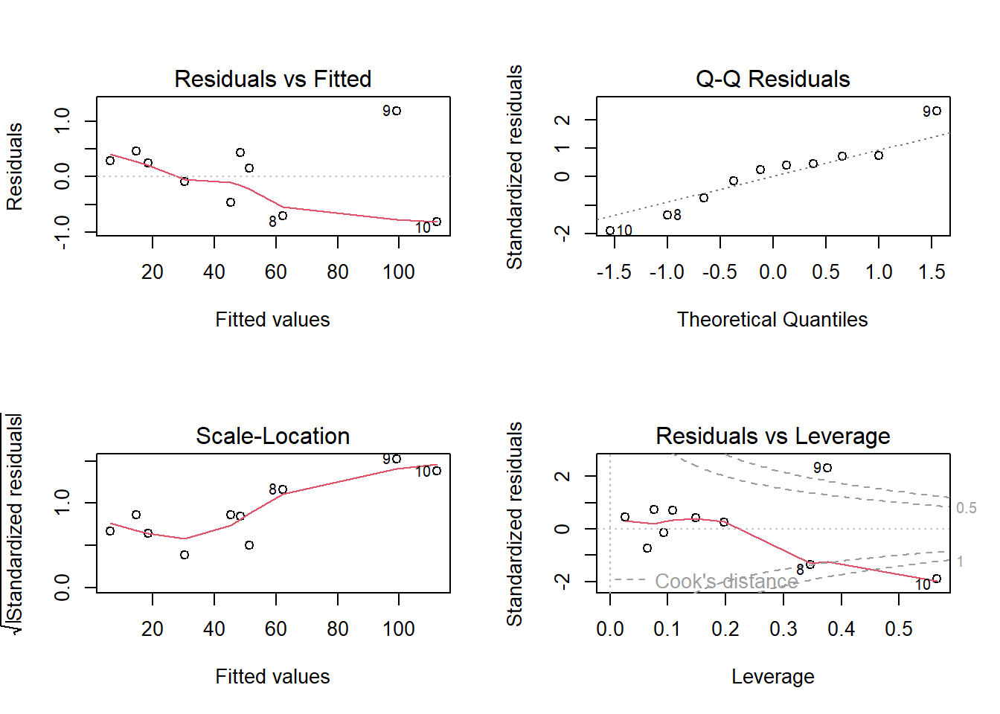
En R, existe la función bptest(), que es el test de Breusch-Pagan para la heterocedasticidad. Esta función toma como entrada un modelo de regresión y devuelve el resultado de la prueba de hipótesis para la homocedasticidad de los residuos.
\(H_0:\) los residuos tienen varianza constante (homocedasticidad)
\(H_1\): hay heterocedasticidad en los residuos
El resultado incluye el valor del estadístico de prueba (el valor de la prueba de Breusch-Pagan), el p-valor y el número de grados de libertad. Si el p-valor es menor que el nivel de significancia elegido, se rechaza la hipótesis nula de homocedasticidad y se concluye que hay heterocedasticidad en los residuos.
Breusch-Pagan
## Cargando paquete requerido: zoo##
## Adjuntando el paquete: 'zoo'## The following objects are masked from 'package:base':
##
## as.Date, as.Date.numeric##
## studentized Breusch-Pagan test
##
## data: modelo3
## BP = 5.7517, df = 1, p-value = 0.01647Entonces como el p-valor es menor al valor de significancia \(0.05\), rechazamos la hipótesis nula y podemos decir que existe heterocedasticidad en los residuales.
La heterocedasticidad es un problema porque la regresión de mínimos cuadrados ordinarios asume que todos los residuales se extraen de una población que tiene una varianza constante (homocedasticidad).
Una forma de corregirlo es haciendo una transformación de los datos. Vamos a transformar la variable \(x_1\). Nota: Estas transformaciones deben de justificarse y explicar el porque.
Modelo 4
##
## Call:
## lm(formula = yp ~ log(x1) + x2 - 1, data = datos)
##
## Residuals:
## Min 1Q Median 3Q Max
## -2.4546 -0.7961 -0.3458 0.9207 2.5270
##
## Coefficients:
## Estimate Std. Error t value Pr(>|t|)
## log(x1) 7.52724 0.72213 10.42 6.22e-06 ***
## x2 2.34013 0.06306 37.11 3.05e-10 ***
## ---
## Signif. codes: 0 '***' 0.001 '**' 0.01 '*' 0.05 '.' 0.1 ' ' 1
##
## Residual standard error: 1.578 on 8 degrees of freedom
## Multiple R-squared: 0.9994, Adjusted R-squared: 0.9993
## F-statistic: 6997 on 2 and 8 DF, p-value: 1.065e-13Si realizamos la prueba de la homocedasticidad.
Test
##
## studentized Breusch-Pagan test
##
## data: modelo4
## BP = 0.13878, df = 1, p-value = 0.7095Vemos que ahora el p-valor es más grande que el valor de significancia, lo cual nos indica que no podemos rechazar \(H_0\), es decir ahora si podemos asumir que hay homocedasticidad.
En el modelo final, tendríamos \(\beta_0=0\), \(\beta_1*=\) 7.5272361 y \(\beta_2=\) 2.3401283.
Otras dos pruebas que se pueden usar son fligner.test y leveneTest.
2.7.4 No autocorrelación
Una forma de revisar este supuesto es con el test de Durbin-Watson. Las hipótesis que se tienen son:
\(H_0:\) No hay autocorrelación en los errores (los residuales son independientes).
\(H_1:\) Hay autocorrelación en los errores (generalmente, autocorrelación positiva de primer orden).
El estadístico DW toma valores entre 0 y 4:
\(DW\) aproximadamente 2, entonces no hay autocorrelación (se cumple el supuesto).
\(DW < 2\), entonces indica autocorrelación positiva (los errores tienden a repetirse).
\(DW > 2\), entonces indica autocorrelación negativa (los errores tienden a alternar signo).
2.8 Análisis de Varianza
Ejemplo 1: Supongamos que un cierto tipo de motor de cohete se fabrica uniendo un propulsor tipo A y un propulsor tipo B. La fuerza del enlace entre los dos propulsores es una característica de importancia y se sospecha que está relacionada con la edad (en semanas) del lote del propulsor tipo B. Se tiene una muestra de tamaño 20 de la fuerza del enlace y la edad del lote del propulsor tipo B que fue utilizado.
datos <- data.frame(
Fuerza_enlace = c(
2158.70, 1678.15, 2316.00, 2061.30, 2207.50,
1708.30, 1784.70, 2575.00, 2357.90, 2256.70,
2165.20, 2399.55, 1779.80, 2336.75, 1765.30,
2053.50, 2414.40, 2200.50, 2654.20, 1753.70
),
Edad_lote = c(
15.50, 23.75, 8.00, 17.00, 5.50,
19.00, 24.00, 2.50, 7.50, 11.00,
13.00, 3.75, 25.00, 9.75, 22.00,
18.00, 6.00, 12.50, 2.00, 21.50
)
)
datos## Fuerza_enlace Edad_lote
## 1 2158.70 15.50
## 2 1678.15 23.75
## 3 2316.00 8.00
## 4 2061.30 17.00
## 5 2207.50 5.50
## 6 1708.30 19.00
## 7 1784.70 24.00
## 8 2575.00 2.50
## 9 2357.90 7.50
## 10 2256.70 11.00
## 11 2165.20 13.00
## 12 2399.55 3.75
## 13 1779.80 25.00
## 14 2336.75 9.75
## 15 1765.30 22.00
## 16 2053.50 18.00
## 17 2414.40 6.00
## 18 2200.50 12.50
## 19 2654.20 2.00
## 20 1753.70 21.50Un modelo completo sería \(y_i = \beta_0 + \beta_1x_i + \epsilon_i\), el cual se ve como:
modelo_completo <- lm(Fuerza_enlace ~ Edad_lote, data = datos)
plot(datos$Edad_lote, datos$Fuerza_enlace,
main = "Modelo completo",
xlab = "Edad del lote (semanas)",
ylab = "Fuerza del enlace (psi)",
pch = 19, col = "blue")
# Agregar la recta de regresión
abline(modelo_completo, col = "red", lwd = 2)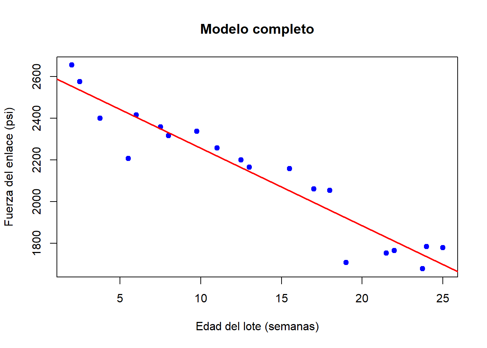
ggplot(datos, aes(x = Edad_lote, y = Fuerza_enlace)) +
geom_point(color = "blue", size = 3) +
geom_smooth(method = "lm", se = TRUE, color = "red") +
labs(
title = "Modelo completo",
x = "Edad del lote (semanas)",
y = "Fuerza del enlace (psi)"
) +
theme_minimal()## `geom_smooth()` using formula = 'y ~ x'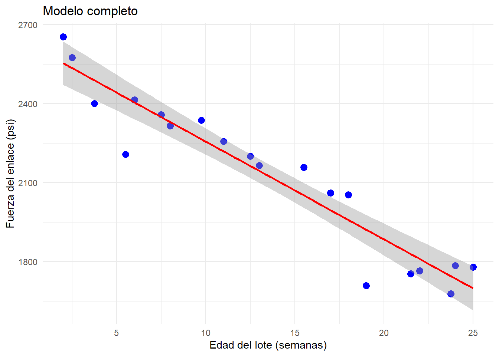 Queremos ver si un modelo reducido explica mejor o no a los datos. En este caso el modelo con menos parámetros o modelo reducido es el modelo que describirá la hipótesis nula \(H_0\). En regresión lineal simple, es común plantear \(H_0:\beta_1=0\), de manera que el modelo reducido es \(y_i=\beta_0+\epsilon_i\), es decir, cada valor \(y_i\) es función de una constante (la media) y un error, este modelo se vería como:
modelo_reducido <- lm(Fuerza_enlace ~ 1, data = datos)
plot(datos$Edad_lote, datos$Fuerza_enlace,
main = "Modelo reducido",
xlab = "Edad del lote (semanas)",
ylab = "Fuerza del enlace (psi)",
pch = 19, col = "blue")
# Agregar la recta de regresión
abline(modelo_reducido, col = "red", lwd = 2)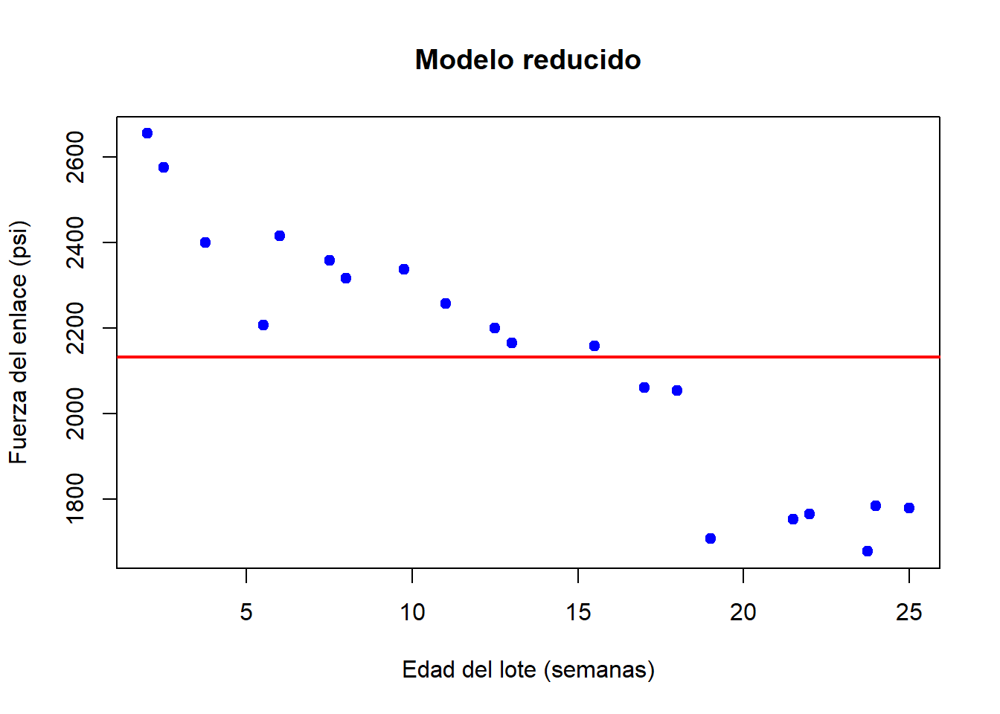
ggplot(datos, aes(x = Edad_lote, y = Fuerza_enlace)) +
geom_point() +
stat_smooth(method = "lm", formula = y ~ 1, se = TRUE, fullrange = TRUE) +
labs(title = "Modelo reducido",
x = "Edad del lote (semanas)", y = "Fuerza del enlace (psi)") +
theme_minimal()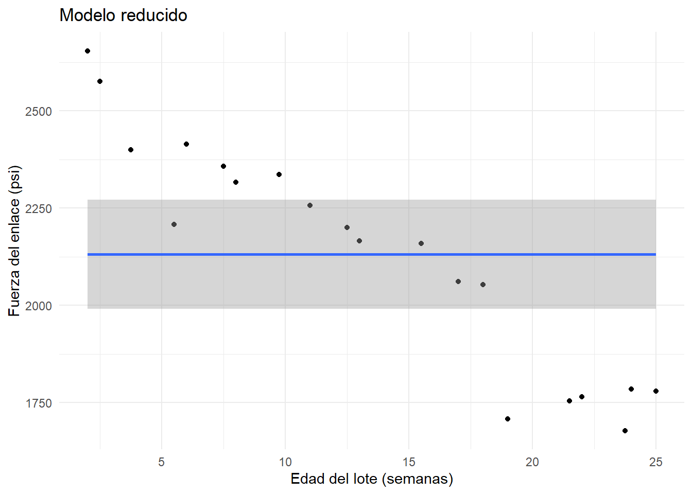
¿Cuál modelo es mejor? Debemos obtener los estimadores para cada modelo y la suma de cuadrados de los errores.
La suma de los cuadrados de los errores \(SSE(C) = \sum(y_i - \hat{y}_i)^2\), la cual tiene \(n-2\) grados de libertad para el modelo completo.
La suma de los cuadrados de los errores del modelo reducido \(SSE(R) = \sum(y_i - \bar{y}_i)^2\), la cual tiene \(n-1\) grados de libertad para el modelo reducido.
Hay que tener en cuenta que \(SSE(R)\) siempre es mayor a \(SSE(C)\), por lo tanto si la diferencia es miu pequeña, entonces tiene sentido utilizar el modelo reducido, pero si la diferencia es muy grande, entonces el parámetro adicional agrega información importante al modelo.
Se usa la prueba \(F\) general:
\[F_0 = \frac{\left( \frac{SSE(R) - SSE(C)}{ (n-1) - (n-2)} \right)}{\frac{SSE(C)}{n-2}} = \frac{SCE(C)}{\frac{SSE(C)}{n-2}} \]
La cantidad \(SSE(R) - SSE(C)\) representa la suma de cuadrados explicada por la variable \(x\), a esta cantidad la vamos a denotar por \(SCE\).
Entonces, rechazar la hipótesis nula \(H_0\) implica rechazar el modelo reducido y no rechazar \(H_0\) implica rechazar el modelo completo.
## Analysis of Variance Table
##
## Response: Fuerza_enlace
## Df Sum Sq Mean Sq F value Pr(>F)
## Edad_lote 1 1527483 1527483 165.38 1.643e-10 ***
## Residuals 18 166255 9236
## ---
## Signif. codes: 0 '***' 0.001 '**' 0.01 '*' 0.05 '.' 0.1 ' ' 1Como el p-valor es muy pequeño, se rechaza \(H_0\) por lo que se concluye que hay pruebas suficientes sobre la existencia de asociación lineal de la edad de lote y la fuerza del enlace.
Todo esto, se puede llevar al caso de regresión lineal múltiple.
Ejemplo: Considere los siguientes datos en los que se tienen mediciones del tamaño de infarto, área de la región en riesgo y dos variables que identifican el tipo de tratamiento utilizado en 32 pacientes. Se busca describir el tamaño del infarto a través de las otras 3-variables. Para este caso, vamos a ajustar un modelo de regresión lineal múltiple completo y después vamos a hacer pruebas sobre quitar algunas variables.
datos <- data.frame(
Paciente = 1:32,
Infarc = c(
0.119, 0.190, 0.395, 0.469, 0.130, 0.311, 0.418, 0.480,
0.687, 0.847, 0.062, 0.122, 0.033, 0.102, 0.206, 0.249,
0.220, 0.299, 0.350, 0.350, 0.588, 0.379, 0.149, 0.316,
0.390, 0.429, 0.477, 0.439, 0.446, 0.538, 0.625, 0.974
),
Area = c(
0.34, 0.64, 0.76, 0.83, 0.73, 0.82, 0.95, 1.06,
1.20, 1.47, 0.44, 0.77, 0.90, 1.07, 1.01, 1.03,
1.16, 1.21, 1.20, 1.22, 0.99, 0.77, 1.05, 1.06,
1.02, 0.99, 0.97, 1.12, 1.23, 1.19, 1.22, 1.40
),
X2 = c(
0,0,0,0,0,0,0,0,
0,0,1,1,1,1,1,1,
1,1,1,1,1,0,0,0,
0,0,0,0,0,0,0,0
),
X3 = c(
0,0,0,0,0,0,0,0,
0,0,0,0,0,0,0,0,
0,0,0,0,0,0,1,1,
1,1,1,1,1,1,1,1
)
)
datos## Paciente Infarc Area X2 X3
## 1 1 0.119 0.34 0 0
## 2 2 0.190 0.64 0 0
## 3 3 0.395 0.76 0 0
## 4 4 0.469 0.83 0 0
## 5 5 0.130 0.73 0 0
## 6 6 0.311 0.82 0 0
## 7 7 0.418 0.95 0 0
## 8 8 0.480 1.06 0 0
## 9 9 0.687 1.20 0 0
## 10 10 0.847 1.47 0 0
## 11 11 0.062 0.44 1 0
## 12 12 0.122 0.77 1 0
## 13 13 0.033 0.90 1 0
## 14 14 0.102 1.07 1 0
## 15 15 0.206 1.01 1 0
## 16 16 0.249 1.03 1 0
## 17 17 0.220 1.16 1 0
## 18 18 0.299 1.21 1 0
## 19 19 0.350 1.20 1 0
## 20 20 0.350 1.22 1 0
## 21 21 0.588 0.99 1 0
## 22 22 0.379 0.77 0 0
## 23 23 0.149 1.05 0 1
## 24 24 0.316 1.06 0 1
## 25 25 0.390 1.02 0 1
## 26 26 0.429 0.99 0 1
## 27 27 0.477 0.97 0 1
## 28 28 0.439 1.12 0 1
## 29 29 0.446 1.23 0 1
## 30 30 0.538 1.19 0 1
## 31 31 0.625 1.22 0 1
## 32 32 0.974 1.40 0 1El modelo completo sería \(y_i = \beta_0 + \beta_1x_{1i} +\beta_2x_{2i} + \beta_3x_{3i}+\epsilon_i\).
##
## Call:
## lm(formula = Infarc ~ Area + X2 + X3, data = datos)
##
## Residuals:
## Min 1Q Median 3Q Max
## -0.28175 -0.06704 -0.01658 0.06294 0.35970
##
## Coefficients:
## Estimate Std. Error t value Pr(>|t|)
## (Intercept) -0.14927 0.10377 -1.439 0.161376
## Area 0.63395 0.10927 5.802 3.12e-06 ***
## X2 -0.25005 0.06053 -4.131 0.000295 ***
## X3 -0.08563 0.06641 -1.289 0.207831
## ---
## Signif. codes: 0 '***' 0.001 '**' 0.01 '*' 0.05 '.' 0.1 ' ' 1
##
## Residual standard error: 0.138 on 28 degrees of freedom
## Multiple R-squared: 0.6456, Adjusted R-squared: 0.6076
## F-statistic: 17 on 3 and 28 DF, p-value: 1.748e-06Con este modelo se obtiene la siguiente tabla de ANOVA.
## Analysis of Variance Table
##
## Response: Infarc
## Df Sum Sq Mean Sq F value Pr(>F)
## Area 1 0.62492 0.62492 32.8245 3.801e-06 ***
## X2 1 0.31453 0.31453 16.5210 0.0003533 ***
## X3 1 0.03165 0.03165 1.6624 0.2078307
## Residuals 28 0.53307 0.01904
## ---
## Signif. codes: 0 '***' 0.001 '**' 0.01 '*' 0.05 '.' 0.1 ' ' 11) Pruebas sobre uno de los parámetros: \(H_0:\beta_1=0\), modelo reducido \(y_i = \beta_0 +\beta_2x_{2i} + \beta_3x_{3i}+\epsilon_i\). Vamos a denotar a la suma de los cuadrados de los errores asociada a este modelo \(SSE(x_1)\), la cual tiene \(n-3\) grados de libertad asociados (tenemos 3 parámetros a estimar \(\beta_0,\beta_2,\beta_3\)). Como el p-valor es muy pequeño, se rechaza a \(H_0\) y se concluye que hay suficiente evidencia para decir que el tamaño del infarto está significativamente relacionado con el tamaño del área de riesgo.
SCE_X1 <- anov$`Sum Sq`[1]
SSE_C <- anov$`Sum Sq`[4]
df2 <- anov$Df[4]
df1 <- nrow(datos) - 3 - df2
F_g <- (SCE_X1/df1) / (SSE_C/df2)
F_g## [1] 32.824472) Pruebas sobre todos los parámetros: En este caso tenemos \(H_0:\beta_1=\beta_2=\beta_3=0\) vs \(H_1: \beta_j\neq 0\) p.a. \(j\). Es decir, el modelo reducido sería \(y_i = \beta_0+\epsilon_i\). La prueba \(F\) general es la misma, pero ahora la suma de cuadrados asociada al modelo reducido \(SSE(x_1,x_2,x_3)\) tiene \(n-1\) grados de libertad ya que solo debemos estimar \(\beta_0\).
SCE_X1X2X3 <- sum(anov$`Sum Sq`[1:3])
df1 <- nrow(datos) -1 - df2
F_all <- (SCE_X1X2X3 / df1) / (SSE_C / df2)
F_all## [1] 17.00263El cual tiene un \(p-\)valor asociado a una distribución \(F\) con 3 y 28 grados de libertad.
## [1] 1.747583e-06Por lo tanto rechazamos la hipótesis nula. Notemos que este valor coincide con el que nos da el summary del modelo.
##
## Call:
## lm(formula = Infarc ~ Area + X2 + X3, data = datos)
##
## Residuals:
## Min 1Q Median 3Q Max
## -0.28175 -0.06704 -0.01658 0.06294 0.35970
##
## Coefficients:
## Estimate Std. Error t value Pr(>|t|)
## (Intercept) -0.14927 0.10377 -1.439 0.161376
## Area 0.63395 0.10927 5.802 3.12e-06 ***
## X2 -0.25005 0.06053 -4.131 0.000295 ***
## X3 -0.08563 0.06641 -1.289 0.207831
## ---
## Signif. codes: 0 '***' 0.001 '**' 0.01 '*' 0.05 '.' 0.1 ' ' 1
##
## Residual standard error: 0.138 on 28 degrees of freedom
## Multiple R-squared: 0.6456, Adjusted R-squared: 0.6076
## F-statistic: 17 on 3 and 28 DF, p-value: 1.748e-063) Pruebas sobre un subconjunto de los parámetros: Supongamos ahora que \(H_0:\beta_2=\beta_3=0\). Es decir, el modelo reducido sería \(y_i = \beta_0+ \beta_1x_{1i}+\epsilon_i\). La prueba es similar pero solo usamos \(x_2\) y \(x_3\).
SCE_X2X3 <- sum(anov$`Sum Sq`[2:3])
df1 <- nrow(datos) - 2 - df2
F_dos <- (SCE_X2X3 / df1) / (SSE_C / df2)
F_dos## [1] 9.091716El \(p-\)valor asociado a la prueba \(F\) con 2 y 28 grados de libertad es:
## [1] 0.0009065789Por lo que se rechaza de nuevo la hipótesis nula.
2.8.1 Ejercicios
Ejercicio 1(R): Para el datasets datasets::trees, realice las pruebas de hipótesis para determinar si:
1) El modelo solo con la variable Girth es mejor que el modelo completo.
2) El modelo sin Girth y Height es mejor que el completo.
Usar la tabla de ANOVA para calcular el estadístico \(F_0\) y encontrar el p-valor asociado usando pf(F_0, df1, df2, lower.tail = FALSE). Justifique su respuesta y suba su código en R a github.
Ejercicio 2(Python): Para el dataset de marketing, realice las pruebas de hipótesis utilizando la tabla de ANOVA sobre:
1) Uno de los parámetros, justificar cual.
2) Todos los parámetros.
3)Un subconjunto de parámetros, justificar cual.
Usar la tabla de ANOVA para calcular el estadístico \(F_0\) y encontrar el p-valor asociado usando pf(F_0, df1, df2, lower.tail = FALSE). Justifique su respuesta y suba su código en Python a github.
2.9 Selección del modelo
Suponga que se busca una ecuación de regresión lineal entre la variable respuesta \(y\) y las variables predictoras \(x_1,...,x_p\). Suponga que se tiene el conjunto de todas las posibles variables a incluir en el modelo \(z_1,...z_k\) que son funciones de las \(x\)’s. Se busca entonces un modelo que incluya la mayor cantidad de variables \(z\) posible para que el error sea pequeño. Pero, considerando la varianza y el costo de obtener más datos, también se busca incluir el menor número de posibles variables \(z\) en el modelo.
No existe un solo método de selección de modelos y no todos conducen a la misma solución. Vamos a analizar tres métodos:
- Todos los modelos posibles y el mejor subconjunto de modelos.
- Selección paso a paso.
- Eliminación hacia atrás.
2.9.1 Todos los modelos posibles
Si el número de variables \(z\) es grande, esto puede ser un problema. Supongamos que tenemos \(k\) variables, donde cada variable puede o no estar en el modelo, entonces tenemos un total de \(2^k\) posibles modelos de los cuales se debe elegir el mejor a partir de criterios como \(R^2\), \(R^2_{adj}\), etc. Vamos a ver algunos de estos criterios.
Estadística \(C_p\) de Mallows
Supongamos que tenemos \(k+1\) variables regresoras incluyendo el intercepto, de las cuales vamos a elegir \(p\). Denotemos por \(SSE_p\) la suma de cuadrados de la regresión respectiva de tomar \(p\) variables, la estadística \(C_p\) de Mallows está dada por
\[C_p = \frac{SSE_p}{\hat{\sigma}^2} - (n-2p) \] donde \(\hat{\sigma}^2\) corresponde al modelo con todas las variables y se supone que es un estimador insesgado para la varianza \(\sigma^2\). Si el modelo ajusta bien, esperaríamos que \(\mathbb{E}(SSE_p)=(n-p)\sigma^2\), de manera que:
\[\mathbb{E}(C_p)\approx p,\]
en consecuencia, si graficamos \(C_p\) en función de \(p\), los modelos adecuados arrojarán puntos cerca de la recta \(C_p=p\).
Criterio de información de Akaike (CIA)
Se define como
\[CIA = e^{\frac{2p}{n}}\frac{SSE}{n},\]
donde \(p\) es el número de variables regresoras incluyendo el intercepto. Esta función incluye una penalización por imponer regresoras. Al comparar modelos, se busca el que tenga menor \(CIA\). Muchas veces esta estadística se define como \(\log(CIA)\), es decir:
\[\frac{2p}{n}+\log(\frac{SSE}{n})\]
con el cual las conclusiones son las mismas.
Criterio de información de Schwars (CIS)
Similar al CIA, el CIS se define como
\[CIS = n^{\frac{p}{n}}\frac{SSE}{n},\]
cuyo logaritmo es
\[\frac{p}{n}\log{n} + \log{\frac{SSE}{n}}.\]
Este criterio impone mayor penalización por agregar variables. Al comparar modelos, se busca el que tenga menor CIS.
2.9.1.1 Mejor subconjunto
Una alternativa a la comparación de todos los modelos posibles es la búsqueda del mejor subconjunto de modelos que se pueden hacer en distintos programas y compararlos. En R, existe la función regsubsets, la cual incluye los criterios de comparación \(R^2, C_p,\) BIC (Bayesian Information Criterion). Esta función utiliza los métodos forward and backward stepwise.
2.9.2 Selección paso a paso
Las técnicas de selección paso a paso consisten en elaborar un modelo inicial a partir del cual se agrega o se elimina una variable para comparar hasta encontrar el mejor modelo.
2.9.2.1 Selección paso a paso hacia adelante
Conocido como forward regression, consiste en comenzar con el modelo en el que la única variable regresora es la que mejor describe el comportamiento de \(y\) y a partir de ahí ir agregando variables regresoras una por una.
El orden en el que se agregan puede variar y se pueden usar diferentes estadísticas o criterios para decidir cual agregar. Se calculan las estadísticas del modelo actual al agregar variable y elegir el modelo con la mejor estadística, siempre que sea un mejor modelo.
2.9.2.2 Selección paso a paso hacia atrás
Conocido como backward regression, consiste en comenzar con el modelo que incluye todas las variables e ir eliminando una a una de acuerdo a algún criterio.
Ambas técnicas se pueden mezclar, de manera que en cada paso se evalúa la estadística correspondiente al quitar o agregar alguna de las variables y se elige la mejor opción.
2.9.3 Ejemplos
2.9.3.1 Todos los modelos posibles
En este ejemplo veremos cómo aplicar el método de seleccion de modelos que implica el análisis de todos los modelos posibles. Primero, necesitaremos varios paquetes.
##
## Adjuntando el paquete: 'olsrr'## The following object is masked from 'package:datasets':
##
## riversEjemplo 1: Cargamos los datos de cemento.txt y hacemos un rápido análisis con el diagrama de dispersión:
cemento<-read.table("D:/Users/hayde/Documents/R_sites/MultivariateStatisticalAnalysis/data/cement.txt", header = T, skip=5)
ggpairs(cemento)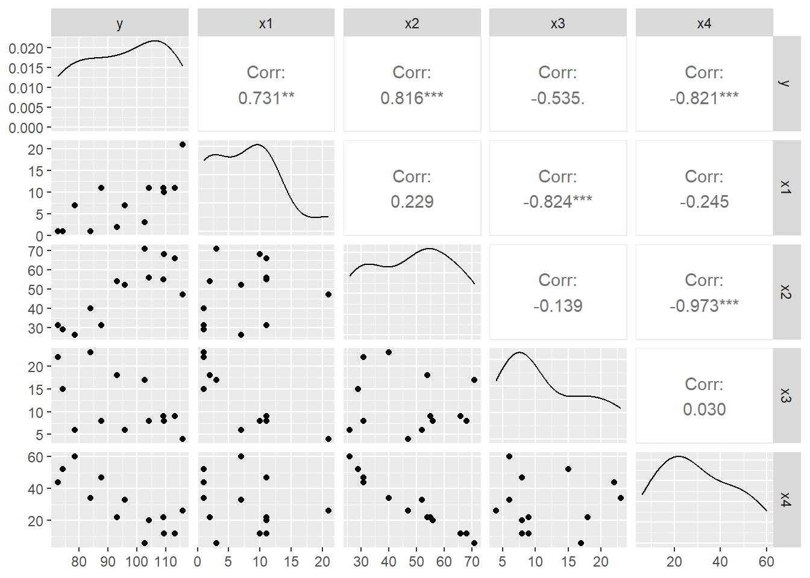
A continuación ajustamos el modelo con TODAS las variables independientes y calculamos la estadística \(C_p\). Para facilitar la interpretación graficamos la \(C_p\) para cada modelo:
modelo.full<-lm(y~., cemento, x=T, y=T)
## calcula el AIC, CIS, etc sobre todos los subconjuntos posibles
outs<-leaps(modelo.full$x, cemento$y, int=FALSE)
plot(outs$size,outs$Cp, log="y",cex=0.3)
lines(outs$size,outs$size)
text(outs$size, outs$Cp, labels=row(outs$which), cex=0.5, pos=4)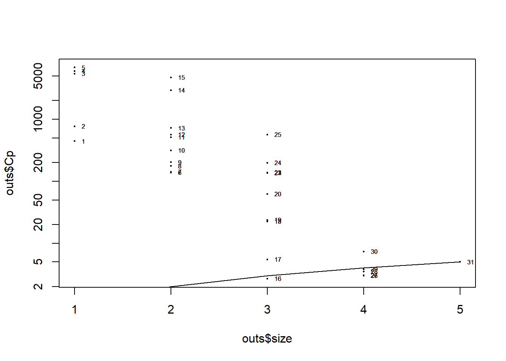
#Mejor modelo por la regla Cp ≈ p (p = número de predictores)
idx_best_rule <- which.min(abs(outs$Cp - outs$size))
#Variables que entran en cada mejor modelo
noms_x <- colnames(modelo.full$x) # nombres de los predictores
vars_rule <- noms_x[ outs$which[idx_best_rule, ] ]
vars_rule## [1] "(Intercept)" "x1" "x2" "x3" "x4"Recordemos que nos interesan los modelos en los que \(C_p=p\).
Ejemplo 2: Vamos a usar la base de datos mtcars. Otra manera de analizar todos los modelos posibles:
library(olsrr)
modelo.full.cars<-lm(mpg~., mtcars)
ejemplo<-ols_step_all_possible(modelo.full.cars)
plot(ejemplo)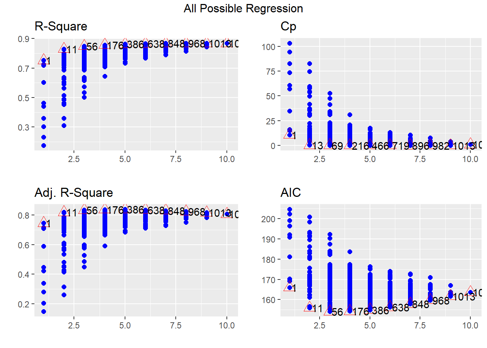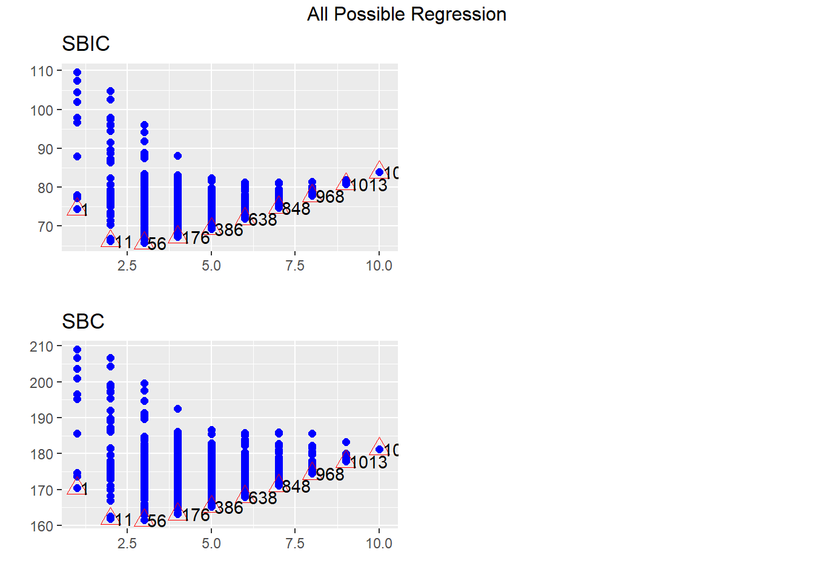
Observe que en los triángulos rojos aparecen los mejores modelos para cada \(p\) en función de la estadística correspondiente.
Ejemplo 3: R tiene una función que nos muestra el mejor modelo para cada número de variables. Vamos a regresar al conjunto de datos cemento.
## Subset selection object
## Call: regsubsets.formula(y ~ ., cemento)
## 4 Variables (and intercept)
## Forced in Forced out
## x1 FALSE FALSE
## x2 FALSE FALSE
## x3 FALSE FALSE
## x4 FALSE FALSE
## 1 subsets of each size up to 4
## Selection Algorithm: exhaustive
## x1 x2 x3 x4
## 1 ( 1 ) " " " " " " "*"
## 2 ( 1 ) "*" "*" " " " "
## 3 ( 1 ) "*" "*" " " "*"
## 4 ( 1 ) "*" "*" "*" "*"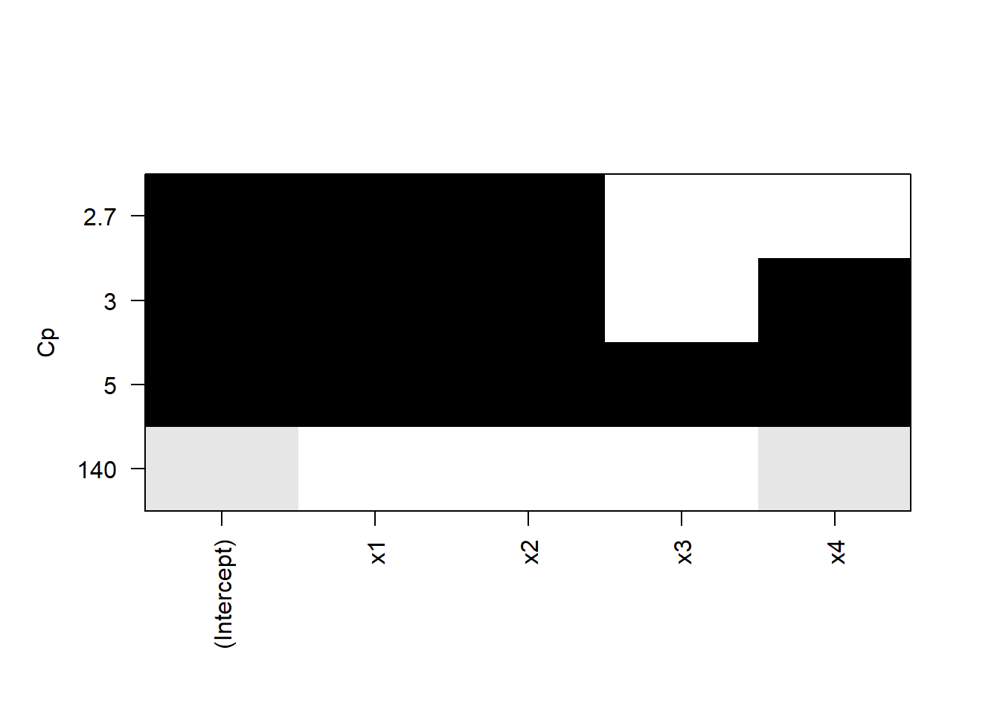
La gráfica muestra los cuatro modelos y su \(C_p\), por ejemplo, el modelo que incluye al intercepto, a \(x_1\) y a \(x_2\) tiene una \(C_p\) cercana a 2.7.
2.9.4 Selección paso a paso
Ejemplo 1: Para analizar el método de selección paso a paso usaremos los datos swiss del paquete MASS. Para ello, el primer paso es ajustar el modelo con TODAS las variables independientes
##
## Adjuntando el paquete: 'MASS'## The following object is masked from 'package:olsrr':
##
## cement## The following object is masked from 'package:patchwork':
##
## area## The following object is masked from 'package:dplyr':
##
## selectPodemos usar la función step en las tres direcciones (forward, backward o both)
## Start: AIC=190.69
## Fertility ~ Agriculture + Examination + Education + Catholic +
## Infant.Mortality
##
## Df Sum of Sq RSS AIC
## - Examination 1 53.03 2158.1 189.86
## <none> 2105.0 190.69
## - Agriculture 1 307.72 2412.8 195.10
## - Infant.Mortality 1 408.75 2513.8 197.03
## - Catholic 1 447.71 2552.8 197.75
## - Education 1 1162.56 3267.6 209.36
##
## Step: AIC=189.86
## Fertility ~ Agriculture + Education + Catholic + Infant.Mortality
##
## Df Sum of Sq RSS AIC
## <none> 2158.1 189.86
## + Examination 1 53.03 2105.0 190.69
## - Agriculture 1 264.18 2422.2 193.29
## - Infant.Mortality 1 409.81 2567.9 196.03
## - Catholic 1 956.57 3114.6 205.10
## - Education 1 2249.97 4408.0 221.43##
## Call:
## lm(formula = Fertility ~ Agriculture + Education + Catholic +
## Infant.Mortality, data = swiss)
##
## Residuals:
## Min 1Q Median 3Q Max
## -14.6765 -6.0522 0.7514 3.1664 16.1422
##
## Coefficients:
## Estimate Std. Error t value Pr(>|t|)
## (Intercept) 62.10131 9.60489 6.466 8.49e-08 ***
## Agriculture -0.15462 0.06819 -2.267 0.02857 *
## Education -0.98026 0.14814 -6.617 5.14e-08 ***
## Catholic 0.12467 0.02889 4.315 9.50e-05 ***
## Infant.Mortality 1.07844 0.38187 2.824 0.00722 **
## ---
## Signif. codes: 0 '***' 0.001 '**' 0.01 '*' 0.05 '.' 0.1 ' ' 1
##
## Residual standard error: 7.168 on 42 degrees of freedom
## Multiple R-squared: 0.6993, Adjusted R-squared: 0.6707
## F-statistic: 24.42 on 4 and 42 DF, p-value: 1.717e-10Ejemplo 2: O podemos usar el paquete olsrr. Base de datos surgical.
## Forward Selection Method
## ------------------------
##
## Candidate Terms:
##
## 1. bcs
## 2. pindex
## 3. enzyme_test
## 4. liver_test
## 5. age
## 6. gender
## 7. alc_mod
## 8. alc_heavy
##
##
## Step => 0
## Model => y ~ 1
## AIC => 802.606
##
## Initiating stepwise selection...
##
## Table: Adding New Variables
## -------------------------------------------------------------------------
## Predictor DF AIC SBC SBIC R2 Adj. R2
## -------------------------------------------------------------------------
## liver_test 1 771.875 777.842 616.009 0.45454 0.44405
## enzyme_test 1 782.629 788.596 626.220 0.33435 0.32154
## pindex 1 794.100 800.067 637.196 0.17680 0.16097
## alc_heavy 1 794.301 800.268 637.389 0.17373 0.15784
## bcs 1 797.697 803.664 640.655 0.12010 0.10318
## alc_mod 1 802.828 808.795 645.601 0.03239 0.01378
## gender 1 802.956 808.923 645.725 0.03009 0.01143
## age 1 803.834 809.801 646.572 0.01420 -0.00476
## -------------------------------------------------------------------------
##
## Step => 1
## Added => liver_test
## Model => y ~ liver_test
## AIC => 771.8753
##
## Table: Adding New Variables
## ------------------------------------------------------------------------
## Predictor DF AIC SBC SBIC R2 Adj. R2
## ------------------------------------------------------------------------
## alc_heavy 1 761.439 769.395 605.506 0.56674 0.54975
## enzyme_test 1 762.077 770.033 606.090 0.56159 0.54440
## pindex 1 770.387 778.343 613.737 0.48866 0.46861
## alc_mod 1 771.141 779.097 614.435 0.48147 0.46113
## gender 1 773.802 781.758 616.901 0.45528 0.43391
## age 1 773.831 781.787 616.928 0.45498 0.43361
## bcs 1 773.867 781.823 616.961 0.45462 0.43323
## ------------------------------------------------------------------------
##
## Step => 2
## Added => alc_heavy
## Model => y ~ liver_test + alc_heavy
## AIC => 761.4394
##
## Table: Adding New Variables
## ------------------------------------------------------------------------
## Predictor DF AIC SBC SBIC R2 Adj. R2
## ------------------------------------------------------------------------
## enzyme_test 1 750.509 760.454 595.297 0.65900 0.63854
## pindex 1 756.125 766.070 600.225 0.62163 0.59892
## bcs 1 763.063 773.008 606.379 0.56975 0.54394
## age 1 763.110 773.055 606.421 0.56938 0.54354
## alc_mod 1 763.428 773.373 606.704 0.56683 0.54084
## gender 1 763.433 773.378 606.709 0.56679 0.54080
## ------------------------------------------------------------------------
##
## Step => 3
## Added => enzyme_test
## Model => y ~ liver_test + alc_heavy + enzyme_test
## AIC => 750.5089
##
## Table: Adding New Variables
## ----------------------------------------------------------------------
## Predictor DF AIC SBC SBIC R2 Adj. R2
## ----------------------------------------------------------------------
## pindex 1 735.715 747.649 582.943 0.75015 0.72975
## bcs 1 750.782 762.716 595.377 0.66973 0.64277
## alc_mod 1 752.403 764.337 596.743 0.65967 0.63189
## age 1 752.416 764.350 596.755 0.65959 0.63180
## gender 1 752.509 764.443 596.833 0.65900 0.63116
## ----------------------------------------------------------------------
##
## Step => 4
## Added => pindex
## Model => y ~ liver_test + alc_heavy + enzyme_test + pindex
## AIC => 735.7146
##
## Table: Adding New Variables
## ----------------------------------------------------------------------
## Predictor DF AIC SBC SBIC R2 Adj. R2
## ----------------------------------------------------------------------
## bcs 1 730.620 744.543 579.638 0.78091 0.75808
## age 1 737.680 751.603 585.012 0.75030 0.72429
## gender 1 737.712 751.635 585.036 0.75016 0.72413
## alc_mod 1 737.713 751.636 585.037 0.75015 0.72413
## ----------------------------------------------------------------------
##
## Step => 5
## Added => bcs
## Model => y ~ liver_test + alc_heavy + enzyme_test + pindex + bcs
## AIC => 730.6204
##
## Table: Adding New Variables
## ----------------------------------------------------------------------
## Predictor DF AIC SBC SBIC R2 Adj. R2
## ----------------------------------------------------------------------
## age 1 732.494 748.406 581.938 0.78142 0.75351
## gender 1 732.551 748.463 581.978 0.78119 0.75325
## alc_mod 1 732.614 748.526 582.023 0.78093 0.75297
## ----------------------------------------------------------------------
##
##
## No more variables to be added.
##
## Variables Selected:
##
## => liver_test
## => alc_heavy
## => enzyme_test
## => pindex
## => bcs##
##
## Stepwise Summary
## --------------------------------------------------------------------------
## Step Variable AIC SBC SBIC R2 Adj. R2
## --------------------------------------------------------------------------
## 0 Base Model 802.606 806.584 646.794 0.00000 0.00000
## 1 liver_test 771.875 777.842 616.009 0.45454 0.44405
## 2 alc_heavy 761.439 769.395 605.506 0.56674 0.54975
## 3 enzyme_test 750.509 760.454 595.297 0.65900 0.63854
## 4 pindex 735.715 747.649 582.943 0.75015 0.72975
## 5 bcs 730.620 744.543 579.638 0.78091 0.75808
## --------------------------------------------------------------------------
##
## Final Model Output
## ------------------
##
## Model Summary
## -------------------------------------------------------------------
## R 0.884 RMSE 184.276
## R-Squared 0.781 MSE 33957.712
## Adj. R-Squared 0.758 Coef. Var 27.839
## Pred R-Squared 0.700 AIC 730.620
## MAE 137.656 SBC 744.543
## -------------------------------------------------------------------
## RMSE: Root Mean Square Error
## MSE: Mean Square Error
## MAE: Mean Absolute Error
## AIC: Akaike Information Criteria
## SBC: Schwarz Bayesian Criteria
##
## ANOVA
## -----------------------------------------------------------------------
## Sum of
## Squares DF Mean Square F Sig.
## -----------------------------------------------------------------------
## Regression 6535804.090 5 1307160.818 34.217 0.0000
## Residual 1833716.447 48 38202.426
## Total 8369520.537 53
## -----------------------------------------------------------------------
##
## Parameter Estimates
## ------------------------------------------------------------------------------------------------
## model Beta Std. Error Std. Beta t Sig lower upper
## ------------------------------------------------------------------------------------------------
## (Intercept) -1178.330 208.682 -5.647 0.000 -1597.914 -758.746
## liver_test 58.064 40.144 0.156 1.446 0.155 -22.652 138.779
## alc_heavy 317.848 71.634 0.314 4.437 0.000 173.818 461.878
## enzyme_test 9.748 1.656 0.521 5.887 0.000 6.419 13.077
## pindex 8.924 1.808 0.380 4.935 0.000 5.288 12.559
## bcs 59.864 23.060 0.241 2.596 0.012 13.498 106.230
## ------------------------------------------------------------------------------------------------##
##
## Stepwise Summary
## -------------------------------------------------------------------------
## Step Variable AIC SBC SBIC R2 Adj. R2
## -------------------------------------------------------------------------
## 0 Full Model 736.390 756.280 586.665 0.78184 0.74305
## 1 alc_mod 734.407 752.308 583.884 0.78177 0.74856
## 2 gender 732.494 748.406 581.290 0.78142 0.75351
## 3 age 730.620 744.543 578.844 0.78091 0.75808
## -------------------------------------------------------------------------
##
## Final Model Output
## ------------------
##
## Model Summary
## -------------------------------------------------------------------
## R 0.884 RMSE 184.276
## R-Squared 0.781 MSE 33957.712
## Adj. R-Squared 0.758 Coef. Var 27.839
## Pred R-Squared 0.700 AIC 730.620
## MAE 137.656 SBC 744.543
## -------------------------------------------------------------------
## RMSE: Root Mean Square Error
## MSE: Mean Square Error
## MAE: Mean Absolute Error
## AIC: Akaike Information Criteria
## SBC: Schwarz Bayesian Criteria
##
## ANOVA
## -----------------------------------------------------------------------
## Sum of
## Squares DF Mean Square F Sig.
## -----------------------------------------------------------------------
## Regression 6535804.090 5 1307160.818 34.217 0.0000
## Residual 1833716.447 48 38202.426
## Total 8369520.537 53
## -----------------------------------------------------------------------
##
## Parameter Estimates
## ------------------------------------------------------------------------------------------------
## model Beta Std. Error Std. Beta t Sig lower upper
## ------------------------------------------------------------------------------------------------
## (Intercept) -1178.330 208.682 -5.647 0.000 -1597.914 -758.746
## bcs 59.864 23.060 0.241 2.596 0.012 13.498 106.230
## pindex 8.924 1.808 0.380 4.935 0.000 5.288 12.559
## enzyme_test 9.748 1.656 0.521 5.887 0.000 6.419 13.077
## liver_test 58.064 40.144 0.156 1.446 0.155 -22.652 138.779
## alc_heavy 317.848 71.634 0.314 4.437 0.000 173.818 461.878
## ------------------------------------------------------------------------------------------------##
##
## Stepwise Summary
## --------------------------------------------------------------------------
## Step Variable AIC SBC SBIC R2 Adj. R2
## --------------------------------------------------------------------------
## 0 Base Model 802.606 806.584 646.794 0.00000 0.00000
## 1 liver_test 771.875 777.842 616.009 0.45454 0.44405
## 2 alc_heavy 761.439 769.395 605.506 0.56674 0.54975
## 3 enzyme_test 750.509 760.454 595.297 0.65900 0.63854
## 4 pindex 735.715 747.649 582.943 0.75015 0.72975
## 5 bcs 730.620 744.543 579.638 0.78091 0.75808
## --------------------------------------------------------------------------
##
## Final Model Output
## ------------------
##
## Model Summary
## -------------------------------------------------------------------
## R 0.884 RMSE 184.276
## R-Squared 0.781 MSE 33957.712
## Adj. R-Squared 0.758 Coef. Var 27.839
## Pred R-Squared 0.700 AIC 730.620
## MAE 137.656 SBC 744.543
## -------------------------------------------------------------------
## RMSE: Root Mean Square Error
## MSE: Mean Square Error
## MAE: Mean Absolute Error
## AIC: Akaike Information Criteria
## SBC: Schwarz Bayesian Criteria
##
## ANOVA
## -----------------------------------------------------------------------
## Sum of
## Squares DF Mean Square F Sig.
## -----------------------------------------------------------------------
## Regression 6535804.090 5 1307160.818 34.217 0.0000
## Residual 1833716.447 48 38202.426
## Total 8369520.537 53
## -----------------------------------------------------------------------
##
## Parameter Estimates
## ------------------------------------------------------------------------------------------------
## model Beta Std. Error Std. Beta t Sig lower upper
## ------------------------------------------------------------------------------------------------
## (Intercept) -1178.330 208.682 -5.647 0.000 -1597.914 -758.746
## liver_test 58.064 40.144 0.156 1.446 0.155 -22.652 138.779
## alc_heavy 317.848 71.634 0.314 4.437 0.000 173.818 461.878
## enzyme_test 9.748 1.656 0.521 5.887 0.000 6.419 13.077
## pindex 8.924 1.808 0.380 4.935 0.000 5.288 12.559
## bcs 59.864 23.060 0.241 2.596 0.012 13.498 106.230
## ------------------------------------------------------------------------------------------------Ojo: el parámetro details=T nos dará en detalle el proceso con el que se llegó al modelo correspondiente. También hay que tener en cuenta que podríamos llegar a modelos diferentes si usamos métodos diferentes.
Si podemos llegar a resultados diferentes, ¿cómo sabemos cuál es el mejor modelo?.
Recordemos que estos métodos se basan en UNA SOLA estadística para ir mejorando el modelo, de manera que, aunque tengamos el modelo con el AIC menor, este podría no ser el mejor en términos del cumplimiento de los supuestos.
Ejemplo 3 Veamos con mas detalle el modelo de cement.txt.
##
## Call:
## lm(formula = y ~ . - x3, data = cemento)
##
## Residuals:
## Min 1Q Median 3Q Max
## -3.0919 -1.8016 0.2562 1.2818 3.8982
##
## Coefficients:
## Estimate Std. Error t value Pr(>|t|)
## (Intercept) 71.6483 14.1424 5.066 0.000675 ***
## x1 1.4519 0.1170 12.410 5.78e-07 ***
## x2 0.4161 0.1856 2.242 0.051687 .
## x4 -0.2365 0.1733 -1.365 0.205395
## ---
## Signif. codes: 0 '***' 0.001 '**' 0.01 '*' 0.05 '.' 0.1 ' ' 1
##
## Residual standard error: 2.309 on 9 degrees of freedom
## Multiple R-squared: 0.9823, Adjusted R-squared: 0.9764
## F-statistic: 166.8 on 3 and 9 DF, p-value: 3.323e-08##
## Call:
## lm(formula = y ~ x1 + x2, data = cemento)
##
## Residuals:
## Min 1Q Median 3Q Max
## -2.893 -1.574 -1.302 1.363 4.048
##
## Coefficients:
## Estimate Std. Error t value Pr(>|t|)
## (Intercept) 52.57735 2.28617 23.00 5.46e-10 ***
## x1 1.46831 0.12130 12.11 2.69e-07 ***
## x2 0.66225 0.04585 14.44 5.03e-08 ***
## ---
## Signif. codes: 0 '***' 0.001 '**' 0.01 '*' 0.05 '.' 0.1 ' ' 1
##
## Residual standard error: 2.406 on 10 degrees of freedom
## Multiple R-squared: 0.9787, Adjusted R-squared: 0.9744
## F-statistic: 229.5 on 2 and 10 DF, p-value: 4.407e-09##
## Call:
## lm(formula = y ~ x1 + x4, data = cemento)
##
## Residuals:
## Min 1Q Median 3Q Max
## -5.0234 -1.4737 0.1371 1.7305 3.7701
##
## Coefficients:
## Estimate Std. Error t value Pr(>|t|)
## (Intercept) 103.09738 2.12398 48.54 3.32e-13 ***
## x1 1.43996 0.13842 10.40 1.11e-06 ***
## x4 -0.61395 0.04864 -12.62 1.81e-07 ***
## ---
## Signif. codes: 0 '***' 0.001 '**' 0.01 '*' 0.05 '.' 0.1 ' ' 1
##
## Residual standard error: 2.734 on 10 degrees of freedom
## Multiple R-squared: 0.9725, Adjusted R-squared: 0.967
## F-statistic: 176.6 on 2 and 10 DF, p-value: 1.581e-08Observamos que en el modelo que elige el algoritmo, la variable X4 no es significativa, y por el diagrama de disperisón vemos que está correlacionada con X2, por ello decidimos analizar el modelo eliminando X2 y X4. En ambos modelos las variables son significativas y \(R^2\) es alta.
Comparemos su AIC
## df AIC
## modelo.bueno 5 63.86629
## modelo.12 4 64.31239
## modelo.14 4 67.63411Entre los tres, preferimos al modelo.12 ya que es el segundo en R^2, todas las variables son significativas y, aunque no tiene el mínimo AIC, sí es muy parecido y es menor que el AIC del modelo.14. Es decir, en conjunto es el modelo.12 es el que mejor cumple los supuestos y tiene buenas estadísticas.